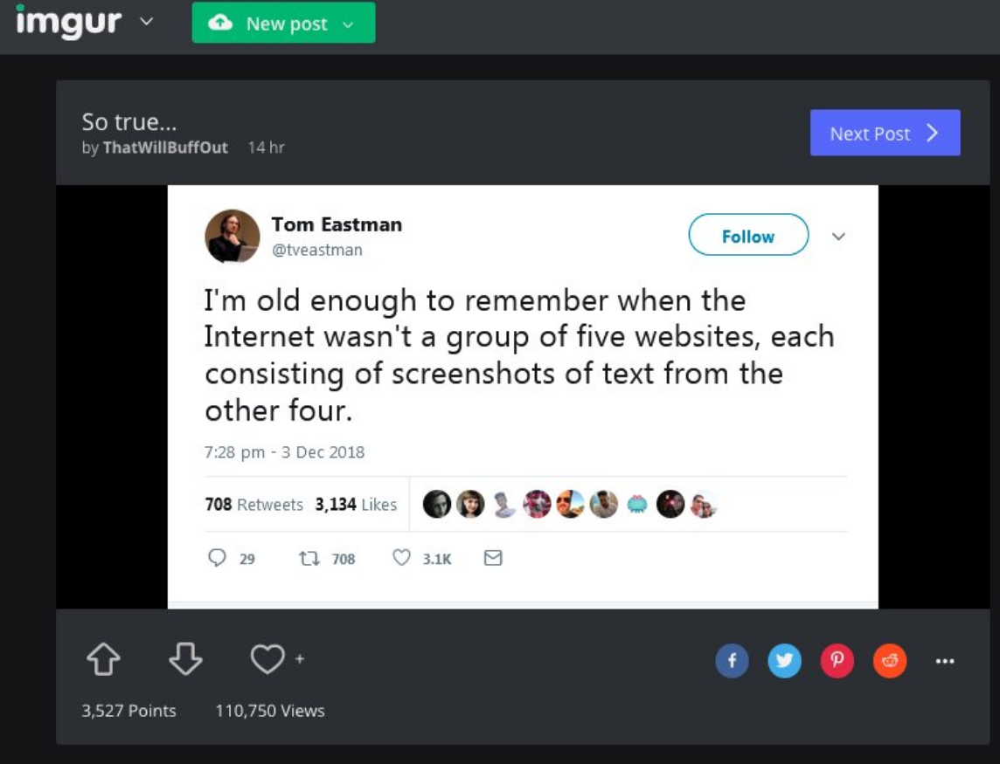

Reifying The Filter Bubble, part 2
In reading about the potential of conflict-free replicated data types, I was brought to the hype around Jack Dorsey's research team developing a 'decentralized' to Twitter's proprietary implementation of an activity feed. From there, I came to Stephen Wolfram's testimony before Congress about AI and algorithmic recommendations and what can be done to make platforms fairer and more transparent.
Both Dorsey and Wolfram made a similar argument: we need to decentralize the governance structure of how algorithmic content recommendations are generated because right now, a single authority gains too much power over the recommendations. This leads to suspicion and a lack of trust between users of the platform and between the users and the platform itself. Opening up the recommendation process to multiple recommender systems will allow for more choice over how things get recommended to users, and potentially for third parties to monitor large-scale patterns in how different recommenders work so that potential biases can be spotted.
They seemed like decent enough arguments, as far as that goes. But as I was reading the testimony and the broader discussion it's a part of, I started to become more and more unsettled by it. I worry because of what's taken as a default in all of it, that the end result is just to reify the structure of the internet as it currently exists.
Media For The Masses
Wolfram, Dorsey, and even the people in Dorsey's mentions grumbling about the fact that ActivityPub already exists all share the same unquestioned assumption: that the future of the 'decentralized' internet is still a trough of undifferentiated content slurry shoved in front of users. That what people want is just a feed, but perhaps with a little more market-friendly choice. The bold vision from the originator of A New Kind Of Science boils down to adding some premium channels to the cable package for the savvy consumer.
Another objection is that my idea makes even worse the tendency with modern technology for people to live inside “content bubbles” where they never broaden their points of view. Well, of course, there can be providers who offer broader content. But people could choose “content bubbles” providers. The good thing, though, is that they’re choosing them, and they know they’re doing that, just like they know they’re choosing to watch one television channel and not another.
Just sprinkle a bit of "choice" atop the existing infrastructure and bam! We've pawned off all responsiblity for what the platforms do and the logic of control they exert on to the users themsevles. Pack up, go home, problem solved.
Wolfram doesn't see himself as a consumer. He sees himself as a creator, and given the obvious self-regard he drips in to the beginning of his testimony, an extremely elite one:
And, as someone who prides himself on turning the seemingly impossible into the possible, this didn’t sit well with me.
He has been quite successful selling some of the same software for information management, interactive computing, and simulation that he uses himself. The idea that these capabilities might be something that end users might like to have, the idea that people might want to use the web as an expressive and creative medium, doesn't enter into his picture in the slightest. The experts get software that can cope with and navigate complexity. Everyone else gets a feed. It's glaringly obvious that the architects of these solutions have no intention whatsoever of using the solutions they're talking about, preferring instead to use a creative and intellectual medium that doesn't constrain their mode of thinking. This, more than anything else, was what I found unsettling about the way users are being talked about in this debate.
Platform, heal thyself
Another obvious objection to Dorsey in particular funding this project is that he's setting himself up to cure the disease his choices created. Surprisingly, even he isn't the most obnoxious voice doing this. That dubious honor belongs to Nir Eyal, who's currently trying to backpedal on the idea that apps can be addictive so hard that he's trying to sell you the cure to a disease he doesn't even think you have.
Nevertheless, Dorsey's position as Twitter CEO makes his virtue signaling quite a bit more consequential. If the "open alternative" to Twitter still follows the basic format that Twitter created and everyone who's interested in that format is already on Twitter, why would they switch? The standard would merely serve to entrench Twitter's massive first-mover advantage in the "public micro-updates" realm of social media, and burnish it with the patina of another Silicon Valley savior story about "doing right by our users" and "time well spent."
If that seems to be over-stated rhetoric, well then here's Wolfram, in his testimony, essentially concurring with my basic point:
With the third-party providers idea, there’s a way out, without damaging the viability of the business. Yes, users get more control, as arguably they should have, given that they are the fuel that makes the business work. But the core business model is still perfectly intact.
Needless to say, any "solution" to this problem that has to satisfy the constraint of leaving the core business model "perfectly intact" is going to be a bit limited.
Metaphor and Medium
The promise of the internet, as I recall it from growing up in the 1990s, was that you'd be able to use your access to it to browse an incredibly rich network of interconnected information with a structure that emerged organically from the links between pages and websites: the World Wide Web. Even the first implementation of HTML fell far short of the potential of the original vision for hypertext, but it showed how powerful this new, networked method of organizing information could be.
That emergent, organic structure is destroyed by being shoved through the narrow hose of a content feed. A linear sequence of undifferentiated items, ordered only by how much of a reaction they get out of you. It's there, you respond, and then it's gone. Then a year or three later you may get reminded of it. Every technical decision is made in deference to the eternal present of ephemeral items in a feed. The idea of searching through my own message history with someone I know for something they sent me months ago is a distant joke; finding something that I want to see again without remembering who posted it is even more so. It's cheaper that way: older resources not in the "current" index are loaded only as they are needed - needed not by users, but by the platform. The density and complexity created by users is hidden away, indexed into an archive no one can see.
Even the idea that the major social media platforms serve to aggregate things from elsewhere on the internet is beginning to break down:

The ouroboros eats its own tail as the feed consumes itself.
In the end, perhaps, maybe the other 1990s metaphor for the internet won out: the "information superhighway." Everyone going slowly in the exact same direction, wracked with gridlock, fighting for a tiny bit of momentary space, day after day after day. What seemed to be the fastest and easiest way of getting to your destination ended up being incredibly stressful and occasionally lethal.
I don't know what a democratic social media platform would look like, but my hope is that it puts more of the real power of computers into the hands of users: the power to collect and collate information as you see fit, to organize and interact with the things you see using tools more powerful than pen and paper. One that doesn't destroy the complexity created by ordinary people doing ordinary things.
And from a strategic perspective, we'd be far better off if we don't let the existing platforms set the terms of the debate.